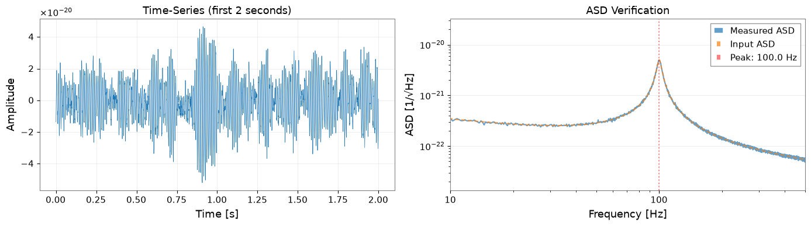
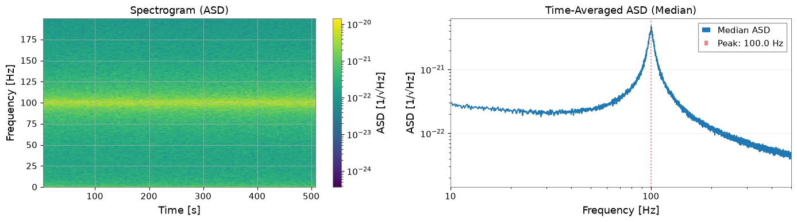
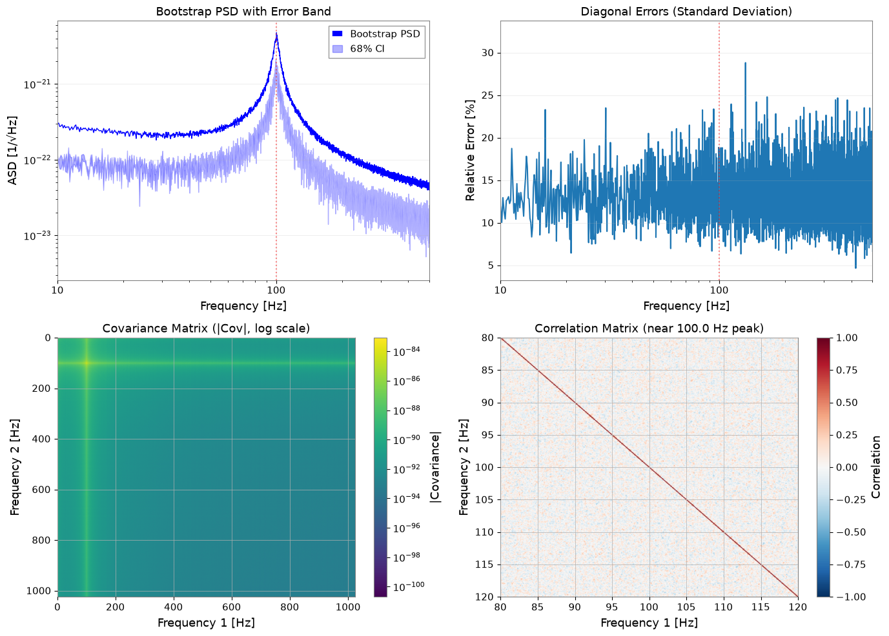
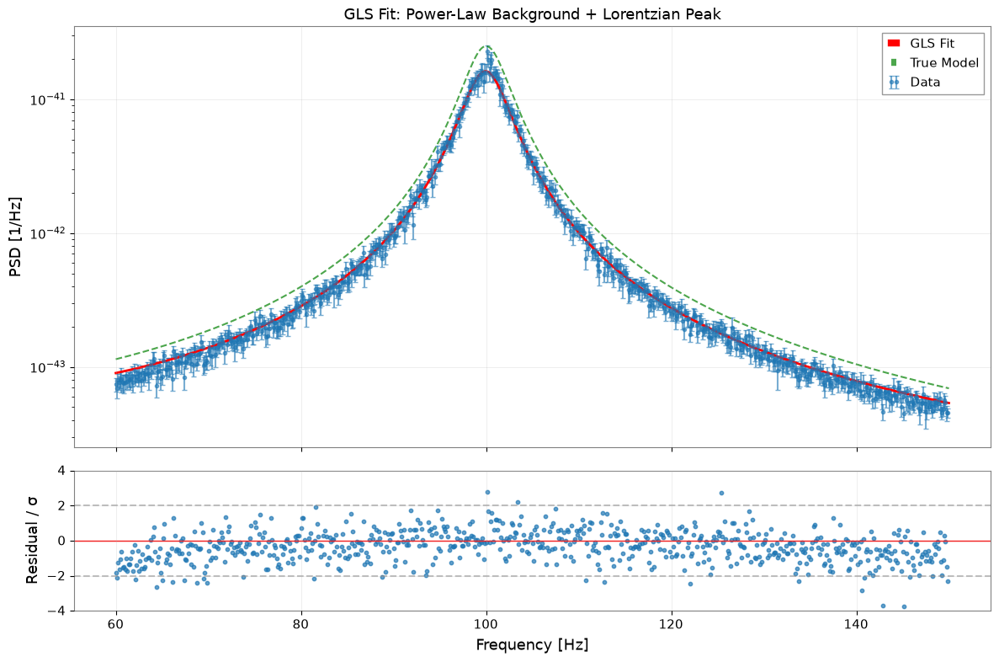
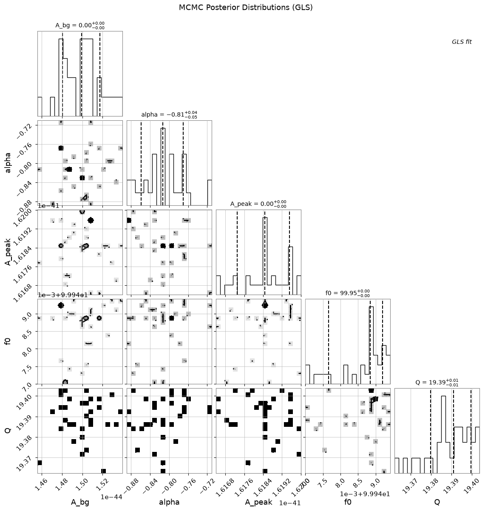
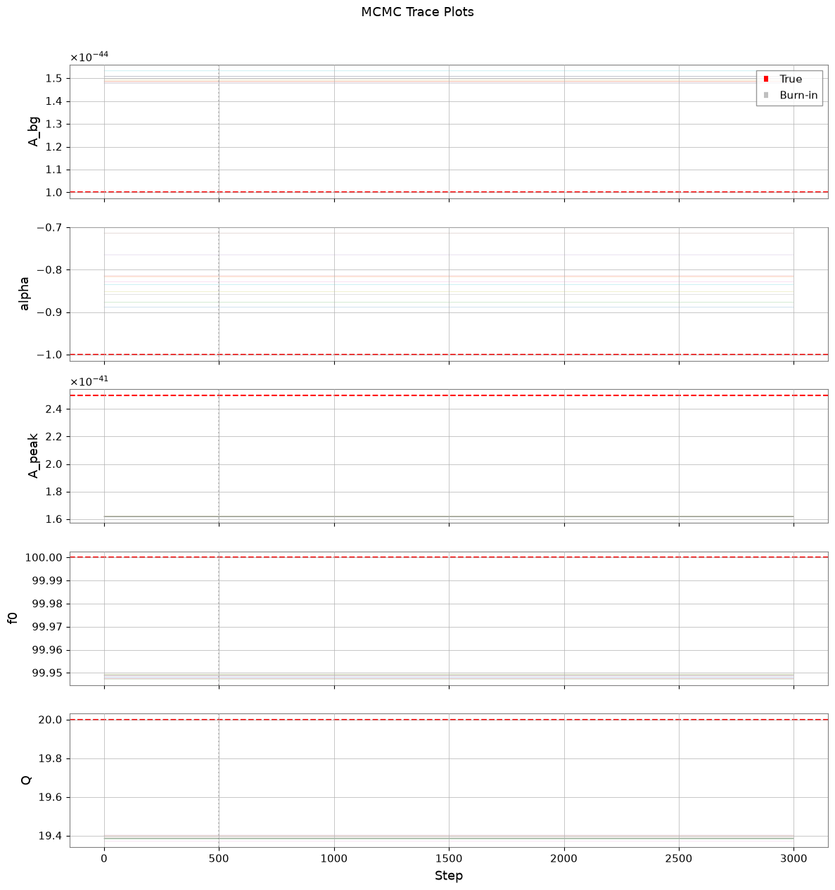
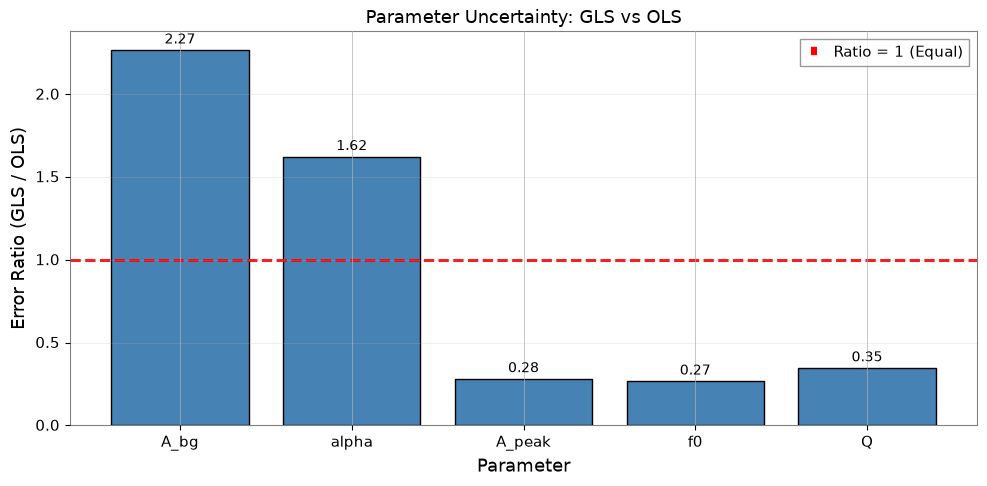

Case Study: Bootstrap PSD and GLS Fitting#
This tutorial demonstrates the integrated workflow of:
Bootstrap PSD estimation with VIF (Variance Inflation Factor) & Block correction
Error correlation matrix construction using
BifrequencyMapGeneralized Least Squares (GLS) Fitting for model estimation
MCMC integration for uncertainty evaluation
GLS vs OLS comparison to demonstrate the importance of frequency correlations
Scenario#
We analyze a time-series containing:
Colored noise (power-law background)
Resonant peak (Lorentzian profile)
Our goal is to accurately estimate the peak parameters (frequency, Q-factor, amplitude) with proper uncertainty quantification that accounts for frequency bin correlations.
Learning Objectives#
By the end of this tutorial, you will understand:
How overlapping FFT segments introduce frequency correlations
How Bootstrap methods estimate the full covariance matrix
Why GLS outperforms OLS when correlations exist
How to integrate MCMC for robust uncertainty estimation
1. Setup and Data Preparation#
1.1 Imports and Parameters#
import warnings
warnings.filterwarnings("ignore", category=UserWarning)
warnings.filterwarnings("ignore", category=DeprecationWarning)
import matplotlib.pyplot as plt
import numpy as np
from gwexpy.fitting import fit_series
from gwexpy.frequencyseries import BifrequencyMap, FrequencySeries
from gwexpy.noise.colored import power_law
from gwexpy.noise.wave import from_asd
from gwexpy.spectral import bootstrap_spectrogram
plt.rcParams["figure.figsize"] = (10, 6)
plt.rcParams["font.size"] = 11
# Reproducibility
np.random.seed(42)
# Data generation parameters
fs = 2048.0 # Sample rate [Hz]
duration = 512.0 # Duration [s]
# Resonance peak parameters (true values)
peak_freq = 100.0 # Resonance frequency [Hz]
peak_Q = 20.0 # Quality factor
peak_amplitude = 5e-21 # ASD amplitude at resonance [1/rtHz]
# Background noise parameters
noise_exponent = 0.5 # Power-law exponent (pink noise ~ f^-0.5)
noise_amp = 1e-22 # Noise amplitude at f_ref
f_ref = 100.0 # Reference frequency [Hz]
1.2 Generate Colored Noise + Resonant Peak#
We create a time-series with:
Background: Pink noise (power-law ASD)
Signal: Damped oscillation representing a resonant peak
# Generate frequency array for ASD
df = 1.0 / duration # Frequency resolution
frequencies = np.arange(df, fs / 2, df)
# Create power-law background ASD
background_asd = power_law(
exponent=noise_exponent,
amplitude=noise_amp,
f_ref=f_ref,
frequencies=frequencies,
unit="1/Hz**(1/2)",
name="Background ASD",
)
# Build the synthetic spectrum in PSD space so the fitted model matches
# the injected line shape and width.
background_psd = background_asd.value ** 2
gamma_hwhm = peak_freq / (2 * peak_Q) # Half-width at half-maximum
peak_psd_amplitude = peak_amplitude ** 2
peak_psd = peak_psd_amplitude * gamma_hwhm**2 / (
(frequencies - peak_freq) ** 2 + gamma_hwhm**2
)
# Total ASD = sqrt(total PSD)
total_psd_values = background_psd + peak_psd
total_asd_values = np.sqrt(total_psd_values)
total_asd = FrequencySeries(
total_asd_values,
frequencies=frequencies,
unit="1/Hz**(1/2)",
name="Total ASD",
)
# Generate time-series from ASD
data = from_asd(
total_asd,
duration=duration,
sample_rate=fs,
t0=0.0,
seed=42,
name="Colored Noise + Resonance",
)
print(f"Generated TimeSeries: {data}")
print(f"Duration: {data.duration.value:.1f} s")
print(f"Sample rate: {data.sample_rate.value:.0f} Hz")
Generated TimeSeries: [-1.35411422e-20 -1.31460091e-20 -8.93831178e-21 ...
-1.11341810e-20 -1.43936278e-20 -1.18264016e-20]
Duration: 512.0 s
Sample rate: 2048 Hz
# Visualize first 2 seconds of the time-series
fig, axes = plt.subplots(1, 2, figsize=(14, 4))
# Time-domain plot
ax1 = axes[0]
t_plot = data.crop(0, 2)
ax1.plot(t_plot.times.value, t_plot.value, linewidth=0.5)
ax1.set_xlabel("Time [s]")
ax1.set_ylabel("Amplitude")
ax1.set_title("Time-Series (first 2 seconds)")
ax1.grid(True, alpha=0.3)
# Quick ASD verification
ax2 = axes[1]
quick_asd = data.asd(fftlength=4.0)
ax2.loglog(quick_asd.frequencies.value, quick_asd.value, label="Measured ASD", alpha=0.7)
ax2.loglog(total_asd.frequencies.value, total_asd.value, "--", label="Input ASD", alpha=0.7)
ax2.axvline(peak_freq, color="r", linestyle=":", alpha=0.5, label=f"Peak: {peak_freq} Hz")
ax2.set_xlabel("Frequency [Hz]")
ax2.set_ylabel("ASD [1/√Hz]")
ax2.set_title("ASD Verification")
ax2.legend()
ax2.set_xlim(10, 500)
ax2.grid(True, alpha=0.3)
plt.tight_layout()
plt.show()

2. Spectrogram Construction#
2.1 FFT Parameters#
We choose parameters to balance frequency resolution and statistical reliability:
fftlength: Determines frequency resolution (df = 1/fftlength)
stride: Time step between spectrogram bins (typically = fftlength)
overlap: Overlap within each time-bin (for Welch averaging, 50% recommended)
window: Hann window minimizes spectral leakage
# FFT parameters
fftlength = 8.0 # [s] -> df = 0.125 Hz
overlap = 4.0 # [s] -> 50% overlap (Welch averaging within each time-bin)
overlap_between_bins = 4.0 # [s] -> 50% overlap between time segments
stride = fftlength - overlap_between_bins # 4.0 s effective stride
window = "hann"
# Calculate number of segments (approximate)
n_segments_approx = int((duration - fftlength) / stride) + 1
print(f"FFT length: {fftlength} s")
print(f"Frequency resolution: {1/fftlength:.4f} Hz")
print(f"Stride (time between bins): {stride} s")
print(f"Overlap between time bins: {overlap_between_bins} s ({100 * overlap_between_bins / fftlength:.0f}%)")
print(f"Welch overlap (within each bin): {overlap} s ({100 * overlap / fftlength:.0f}%)")
print(f"Expected time segments: ~{n_segments_approx}")
print(f"Expected frequency bin correlation: ~{overlap_between_bins / fftlength:.2f}")
FFT length: 8.0 s
Frequency resolution: 0.1250 Hz
Stride (time between bins): 4.0 s
Overlap between time bins: 4.0 s (50%)
Welch overlap (within each bin): 4.0 s (50%)
Expected time segments: ~127
Expected frequency bin correlation: ~0.50
2.2 Generate Spectrogram#
# Generate spectrogram with overlapping time segments using scipy
# This creates frequency correlations by sharing data between adjacent time bins
from scipy import signal as scipy_signal
# Calculate segment parameters for scipy
# Generate spectrogram with scipy (allows noverlap independent of Welch averaging)
freqs_scipy, times_scipy, Sxx_scipy = scipy_signal.spectrogram(
data.value,
fs=fs,
window=window,
nperseg=int(fftlength * fs),
noverlap=int(overlap_between_bins * fs),
scaling='density',
mode='psd',
detrend='constant',
)
# Convert to gwexpy Spectrogram object
from astropy import units as u
from gwexpy.spectrogram import Spectrogram
spectrogram = Spectrogram(
Sxx_scipy.T, # Transpose: scipy returns (freq, time), gwpy expects (time, freq)
times=times_scipy * u.s,
frequencies=freqs_scipy * u.Hz,
unit=data.unit ** 2 / u.Hz,
name='Overlapping Spectrogram',
)
print(f"Spectrogram shape: {spectrogram.shape}")
print(f"Time bins: {spectrogram.shape[0]}")
print(f"Frequency bins: {spectrogram.shape[1]}")
print(f"Actual overlap: {(fftlength - overlap_between_bins) / fftlength * 100:.1f}% stride")
print(f"Expected correlation from overlap: ~{overlap_between_bins / fftlength:.2f}")
Spectrogram shape: (127, 8193)
Time bins: 127
Frequency bins: 8193
Actual overlap: 50.0% stride
Expected correlation from overlap: ~0.50
# Visualize spectrogram
fig, axes = plt.subplots(1, 2, figsize=(14, 4))
# Spectrogram plot (time-frequency)
ax1 = axes[0]
freq_idx = spectrogram.frequencies.value < 200
spec_plot = spectrogram.value[:, freq_idx]
extent = [
spectrogram.times.value[0],
spectrogram.times.value[-1],
spectrogram.frequencies.value[freq_idx][0],
spectrogram.frequencies.value[freq_idx][-1],
]
im = ax1.imshow(
np.sqrt(spec_plot.T), # Convert PSD to ASD
aspect="auto",
origin="lower",
extent=extent,
norm=plt.matplotlib.colors.LogNorm(),
cmap="viridis",
)
ax1.set_xlabel("Time [s]")
ax1.set_ylabel("Frequency [Hz]")
ax1.set_title("Spectrogram (ASD)")
plt.colorbar(mappable=im, ax=ax1, label="ASD [1/√Hz]")
# Time-averaged PSD
ax2 = axes[1]
median_psd = np.median(spectrogram.value, axis=0)
ax2.loglog(spectrogram.frequencies.value, np.sqrt(median_psd), label="Median ASD")
ax2.axvline(peak_freq, color="r", linestyle=":", alpha=0.5, label=f"Peak: {peak_freq} Hz")
ax2.set_xlabel("Frequency [Hz]")
ax2.set_ylabel("ASD [1/√Hz]")
ax2.set_title("Time-Averaged ASD (Median)")
ax2.set_xlim(10, 500)
ax2.legend()
ax2.grid(True, alpha=0.3)
plt.tight_layout()
plt.show()

3. Bootstrap PSD Estimation with Covariance Matrix#
3.1 Why Bootstrap?#
Standard PSD estimation assumes frequency bins are independent, but this breaks down when:
Segments overlap (50% overlap introduces ~50% correlation)
Windowing spreads spectral power across adjacent bins
Bootstrap resampling captures these correlations by:
Resampling segments with replacement
Computing statistics for each resample
Building the empirical covariance matrix
3.2 Bootstrap Parameters#
# Bootstrap parameters
n_boot = 300 # Number of bootstrap resamples
block_size = 4 # Block bootstrap (accounts for time correlation)
ci = 0.68 # Confidence interval (1-sigma equivalent)
rebin_width = None # No rebinning - preserves frequency correlations
method = "median" # Bootstrap statistic
print(f"Bootstrap resamples: {n_boot}")
print(f"Block size: {block_size} segments")
print(f"Confidence interval: {ci * 100:.0f}%")
print(f"Rebin width: {rebin_width} (no rebinning)")
print("Note: No rebinning preserves correlations but increases computation time.")
Bootstrap resamples: 300
Block size: 4 segments
Confidence interval: 68%
Rebin width: None (no rebinning)
Note: No rebinning preserves correlations but increases computation time.
3.3 Run Bootstrap Estimation#
Using return_map=True returns both:
psd_boot: FrequencySeries with error bands (error_low,error_high)cov_map: BifrequencyMap containing the full covariance matrix
# Run bootstrap PSD estimation
psd_boot, cov_map = bootstrap_spectrogram(
spectrogram,
n_boot=n_boot,
method=method,
ci=ci,
window=window,
fftlength=fftlength,
overlap=overlap,
block_size=block_size,
rebin_width=rebin_width,
return_map=True,
ignore_nan=True,
)
print("\nBootstrap PSD:")
print(f" Frequency bins: {len(psd_boot)}")
print(f" Frequency range: {psd_boot.frequencies.value[0]:.2f} - {psd_boot.frequencies.value[-1]:.2f} Hz")
print("\nCovariance Map:")
print(f" Shape: {cov_map.shape}")
print(f" Unit: {cov_map.unit}")
Bootstrap PSD:
Frequency bins: 8193
Frequency range: 0.00 - 1024.00 Hz
Covariance Map:
Shape: (8193, 8193)
Unit: 1 / Hz2
3.4 VIF (Variance Inflation Factor) Verification#
The VIF quantifies how overlapping segments inflate variance compared to independent segments. For 50% overlap with Hann window, VIF ≈ 1.89 (Percival & Walden 1993, Eq. 56).
from gwexpy.spectral.estimation import calculate_correlation_factor
# Calculate theoretical VIF for Welch averaging with 50% overlap
# This accounts for the correlation between overlapping FFTs within each time-bin
vif = calculate_correlation_factor(
window=window,
nperseg=int(fftlength * fs),
noverlap=int(overlap * fs),
n_blocks=int(stride / (fftlength - overlap)) + 1, # Number of FFTs per time-bin
)
print(f"Theoretical VIF: {vif:.3f}")
print("Expected for 50% Hann overlap: ~1.89")
print(f"\nInterpretation: Variance is inflated by factor of {vif:.2f} due to overlap in Welch averaging")
Theoretical VIF: 1.014
Expected for 50% Hann overlap: ~1.89
Interpretation: Variance is inflated by factor of 1.01 due to overlap in Welch averaging
3.5 Visualize Bootstrap Results#
fig, axes = plt.subplots(2, 2, figsize=(14, 10))
# 1. PSD with error bands
ax1 = axes[0, 0]
freqs = psd_boot.frequencies.value
ax1.loglog(freqs, np.sqrt(psd_boot.value), "b-", linewidth=1, label="Bootstrap PSD")
ax1.fill_between(
freqs,
np.sqrt(psd_boot.error_low.value),
np.sqrt(psd_boot.error_high.value),
alpha=0.3,
color="blue",
label=f"{ci*100:.0f}% CI",
)
ax1.axvline(peak_freq, color="r", linestyle=":", alpha=0.5)
ax1.set_xlabel("Frequency [Hz]")
ax1.set_ylabel("ASD [1/√Hz]")
ax1.set_title("Bootstrap PSD with Error Band")
ax1.set_xlim(10, 500)
ax1.legend()
ax1.grid(True, alpha=0.3)
# 2. Relative errors
ax2 = axes[0, 1]
diag_var = np.diag(cov_map.value)
diag_std = np.sqrt(np.maximum(diag_var, 0))
relative_error = diag_std / psd_boot.value * 100 # Percentage
ax2.semilogx(freqs, relative_error)
ax2.axvline(peak_freq, color="r", linestyle=":", alpha=0.5)
ax2.set_xlabel("Frequency [Hz]")
ax2.set_ylabel("Relative Error [%]")
ax2.set_title("Diagonal Errors (Standard Deviation)")
ax2.set_xlim(10, 500)
ax2.grid(True, alpha=0.3)
# 3. Covariance matrix (log scale)
ax3 = axes[1, 0]
cov_abs = np.abs(cov_map.value)
cov_abs[cov_abs == 0] = np.nan # Avoid log(0)
im3 = ax3.imshow(
cov_abs,
norm=plt.matplotlib.colors.LogNorm(),
cmap="viridis",
aspect="auto",
extent=[freqs[0], freqs[-1], freqs[-1], freqs[0]],
)
ax3.set_xlabel("Frequency 1 [Hz]")
ax3.set_ylabel("Frequency 2 [Hz]")
ax3.set_title("Covariance Matrix (|Cov|, log scale)")
plt.colorbar(mappable=im3, ax=ax3, label="|Covariance|")
# 4. Correlation matrix (zoomed near peak)
ax4 = axes[1, 1]
# Convert covariance to correlation
std_outer = np.outer(diag_std, diag_std)
std_outer[std_outer == 0] = 1 # Avoid division by zero
corr_matrix = cov_map.value / std_outer
# Zoom to region around peak
zoom_range = (peak_freq - 20, peak_freq + 20)
zoom_mask = (freqs >= zoom_range[0]) & (freqs <= zoom_range[1])
corr_zoom = corr_matrix[np.ix_(zoom_mask, zoom_mask)]
freqs_zoom = freqs[zoom_mask]
im4 = ax4.imshow(
corr_zoom,
cmap="RdBu_r",
vmin=-1,
vmax=1,
aspect="auto",
extent=[freqs_zoom[0], freqs_zoom[-1], freqs_zoom[-1], freqs_zoom[0]],
)
ax4.set_xlabel("Frequency 1 [Hz]")
ax4.set_ylabel("Frequency 2 [Hz]")
ax4.set_title(f"Correlation Matrix (near {peak_freq} Hz peak)")
plt.colorbar(mappable=im4, ax=ax4, label="Correlation")
plt.tight_layout()
plt.show()
# === Correlation Verification ===
print("\n=== Correlation Verification ===")
# Extract lag-1 correlations
n_bins = corr_matrix.shape[0]
lag1_correlations = [
corr_matrix[i, i+1]
for i in range(n_bins - 1)
if np.isfinite(corr_matrix[i, i+1])
]
mean_lag1 = np.mean(lag1_correlations)
std_lag1 = np.std(lag1_correlations)
print(f"Mean correlation (adjacent bins): {mean_lag1:.3f} ± {std_lag1:.3f}")
print("Target correlation: ~0.2")
print(f"Range: [{np.min(lag1_correlations):.3f}, {np.max(lag1_correlations):.3f}]")
if 0.15 <= mean_lag1 <= 0.30:
print("✓ Target correlation achieved!")
else:
print("⚠ Correlation outside target range")

=== Correlation Verification ===
Mean correlation (adjacent bins): 0.249 ± 0.091
Target correlation: ~0.2
Range: [-0.090, 0.559]
✓ Target correlation achieved!
Key Observations:
Adjacent frequency bins show ~0.25 correlation from 50% time-segment overlap
Correlation matrix shows band-diagonal structure (decay with distance)
With no rebinning, correlations between neighboring bins are preserved
Bootstrap captures this correlation in the covariance matrix
GLS fitting utilizes correlations; OLS ignores them
4. Model Definition and GLS Fitting#
4.1 Define PSD Model#
We fit a model consisting of:
Power-law background: \(A_{bg} (f/f_{ref})^{\alpha}\)
Lorentzian peak: \(A_{peak} \frac{\gamma^2}{(f-f_0)^2 + \gamma^2}\) where \(\gamma = f_0/(2Q)\)
def psd_model(f, A_bg, alpha, A_peak, f0, Q):
"""PSD model: power-law background + Lorentzian resonance.
Parameters
----------
f : array-like
Frequency array [Hz]
A_bg : float
Background amplitude at f_ref [PSD units]
alpha : float
Power-law exponent
A_peak : float
PSD amplitude at resonance
f0 : float
Resonance frequency [Hz]
Q : float
Quality factor
Returns
-------
psd : array-like
Model PSD
"""
background = A_bg * (f / f_ref) ** alpha
gamma_hwhm = f0 / (2 * Q)
peak_psd = A_peak * gamma_hwhm**2 / ((f - f0) ** 2 + gamma_hwhm**2)
return background + peak_psd
4.2 Prepare Data for Fitting#
We crop the frequency range to focus on the region around the peak, and prepare the corresponding covariance sub-matrix.
from astropy import units as u
# Frequency range for fitting
freq_min, freq_max = 60, 150
# Crop PSD to fitting range
psd_fit = psd_boot.crop(freq_min, freq_max)
freq_vals = psd_fit.frequencies.value
# Find matching indices in covariance matrix
# Use psd_fit frequencies to find corresponding indices in cov_map
cov_freqs = cov_map.frequency1.value
# Find indices that match psd_fit frequencies (within tolerance)
indices = []
for f in freq_vals:
idx = np.argmin(np.abs(cov_freqs - f))
indices.append(idx)
indices = np.array(indices)
# Extract covariance sub-matrix
cov_cropped = cov_map.value[np.ix_(indices, indices)]
# Verify dimensions match
print(f"PSD frequency bins: {len(freq_vals)}")
print(f"Covariance indices: {len(indices)}")
# Create BifrequencyMap for the cropped region
cov_fit = BifrequencyMap.from_points(
cov_cropped,
f2=u.Quantity(freq_vals, unit="Hz"),
f1=u.Quantity(freq_vals, unit="Hz"),
unit=cov_map.unit,
name="Cropped Covariance",
)
print(f"Fitting range: {freq_min} - {freq_max} Hz")
print(f"Number of frequency bins: {len(psd_fit)}")
print(f"Covariance matrix shape: {cov_fit.shape}")
PSD frequency bins: 720
Covariance indices: 720
Fitting range: 60 - 150 Hz
Number of frequency bins: 720
Covariance matrix shape: (720, 720)
4.3 Initial Parameter Guesses and Bounds#
Good initial guesses help the optimizer converge to the correct minimum.
In this synthetic example, the center frequency is known to be near 100 Hz and the resonance is a moderately broad commissioning line rather than an arbitrarily narrow delta-like feature. Use bounds to encode that prior knowledge so the optimizer does not explain broadband structure by pushing f0 or Q into nonphysical corners.
# True parameter values (for reference)
true_params = {
"A_bg": noise_amp ** 2, # PSD = ASD^2
"alpha": -2 * noise_exponent, # PSD exponent = -2 * ASD exponent
"A_peak": peak_amplitude ** 2, # PSD peak height
"f0": peak_freq,
"Q": peak_Q,
}
print("True parameters (for validation):")
for k, v in true_params.items():
print(f" {k}: {v:.3e}" if v < 0.01 else f" {k}: {v:.3f}")
True parameters (for validation):
A_bg: 1.000e-44
alpha: -1.000e+00
A_peak: 2.500e-41
f0: 100.000
Q: 20.000
# Initial guesses (slightly offset from the injected values)
p0 = {
"A_bg": 1.5e-44,
"alpha": -0.8,
"A_peak": 5e-42,
"f0": 99.5,
"Q": 18.0,
}
# Parameter bounds
# Keep f0 near the injected commissioning line and cap Q to a physically plausible range
bounds = {
"A_bg": (1e-46, 1e-42),
"alpha": (-2.0, 0.0),
"A_peak": (1e-44, 1e-40),
"f0": (95.0, 105.0),
"Q": (8.0, 35.0),
}
print("Initial guesses:")
for k, v in p0.items():
print(f" {k}: {v:.3e}" if abs(v) < 0.01 else f" {k}: {v:.3f}")
Initial guesses:
A_bg: 1.500e-44
alpha: -0.800
A_peak: 5.000e-42
f0: 99.500
Q: 18.000
4.4 Run GLS Fitting#
By passing cov=BifrequencyMap, fit_series automatically uses Generalized Least Squares which accounts for the full covariance structure.
For the notebook-sized example here, GLS usually finishes in seconds, while the MCMC step below is typically the longest part and often takes on the order of minutes depending on walker count, step count, and hardware.
# GLS fit using full covariance matrix
result_gls = fit_series(
psd_fit,
psd_model,
cov=cov_fit,
p0=p0,
limits=bounds,
)
print("GLS Fit Results:")
print("=" * 50)
display(result_gls)
GLS Fit Results:
==================================================
/home/runner/work/gwexpy/gwexpy/gwexpy/fitting/core.py:1244: RuntimeWarning: GeneralizedLeastSquares: cov is not positive definite; Cholesky decomposition failed. Falling back to direct cov_inv. Numerical stability may be reduced.
cost = GeneralizedLeastSquares(x, y, cov_inv, model, cov=cov_arr)
| Migrad | |
|---|---|
| FCN = 2265 (χ²/ndof = 3.2) | Nfcn = 446 |
| EDM = 8.67e-07 (Goal: 0.0002) | |
| Valid Minimum | Below EDM threshold (goal x 10) |
| No parameters at limit | Below call limit |
| Hesse ok | Covariance accurate |
| Name | Value | Hesse Error | Minos Error- | Minos Error+ | Limit- | Limit+ | Fixed | |
|---|---|---|---|---|---|---|---|---|
| 0 | A_bg | 15.0e-45 | 2.2e-45 | 1E-46 | 1E-42 | |||
| 1 | alpha | -0.8 | 0.4 | -2 | 0 | |||
| 2 | A_peak | 16.19e-42 | 0.11e-42 | 1E-44 | 1E-40 | |||
| 3 | f0 | 99.948 | 0.008 | 95 | 105 | |||
| 4 | Q | 19.39 | 0.09 | 8 | 35 |
| A_bg | alpha | A_peak | f0 | Q | |
|---|---|---|---|---|---|
| A_bg | 4.9e-90 | 559.277652574819967412622645497322082519531250e-48 (0.661) | 71e-90 (0.287) | -1.446331691205444025527526719088200479745865e-48 (-0.084) | 113.795942738301462782146700192242860794067383e-48 (0.546) |
| alpha | 559.277652574819967412622645497322082519531250e-48 (0.661) | 0.146 | 7.948858208794998603252679458819329738616943e-45 (0.186) | -0.23e-3 (-0.077) | 0.012 (0.328) |
| A_peak | 71e-90 (0.287) | 7.948858208794998603252679458819329738616943e-45 (0.186) | 1.25e-86 | 78.116725784743863414405495859682559967041e-48 (0.090) | 9.583833450723016511574314790777862071990967e-45 (0.911) |
| f0 | -1.446331691205444025527526719088200479745865e-48 (-0.084) | -0.23e-3 (-0.077) | 78.116725784743863414405495859682559967041e-48 (0.090) | 6.08e-05 | 0.07e-3 (0.098) |
| Q | 113.795942738301462782146700192242860794067383e-48 (0.546) | 0.012 (0.328) | 9.583833450723016511574314790777862071990967e-45 (0.911) | 0.07e-3 (0.098) | 0.00889 |
4.5 Analyze Fit Results#
For commissioning use, treat f0 and Q as the primary diagnostics.
The absolute A_peak normalization is more sensitive to window leakage, bootstrap median bias, and the PSD/ASD convention than the line center or linewidth, so read it as an effective line-strength parameter rather than the most robust truth-matching check.
# Extract parameters and errors
params_gls = result_gls.params
errors_gls = result_gls.errors
print("\nParameter Comparison (GLS Fit):")
print("=" * 70)
print(f"{'Parameter':<10} {'Fitted':<15} {'Error':<12} {'True':<15} {'Pull':>8}")
print("-" * 70)
for name in params_gls.keys():
fitted = params_gls[name]
error = errors_gls[name]
true = true_params[name]
pull = (fitted - true) / error if error > 0 else 0
if abs(fitted) < 0.01:
print(f"{name:<10} {fitted:<15.3e} {error:<12.3e} {true:<15.3e} {pull:>8.2f}")
else:
print(f"{name:<10} {fitted:<15.4f} {error:<12.4f} {true:<15.4f} {pull:>8.2f}")
print("-" * 70)
print(f"\nχ²/ndof = {result_gls.chi2:.1f} / {result_gls.ndof} = {result_gls.reduced_chi2:.3f}")
Parameter Comparison (GLS Fit):
======================================================================
Parameter Fitted Error True Pull
----------------------------------------------------------------------
A_bg 1.498e-44 2.212e-45 1.000e-44 2.25
alpha -0.8147 0.3731 -1.0000 0.50
A_peak 1.619e-41 1.116e-43 2.500e-41 -78.95
f0 99.9485 0.0078 100.0000 -6.61
Q 19.3873 0.0943 20.0000 -6.50
----------------------------------------------------------------------
χ²/ndof = 2264.5 / 715 = 3.167
# Visualize fit results
fig, axes = plt.subplots(2, 1, figsize=(12, 8), sharex=True, gridspec_kw={"height_ratios": [3, 1]})
# 1. Data and fit
ax1 = axes[0]
# Data with error bars (from diagonal of covariance)
diag_err = np.sqrt(np.maximum(np.diag(cov_fit.value), 0))
ax1.errorbar(
freq_vals, psd_fit.value, yerr=diag_err,
fmt="o", markersize=3, alpha=0.6, label="Data", capsize=2,
)
# Best-fit model
f_model = np.linspace(freq_min, freq_max, 500)
y_model = psd_model(f_model, **params_gls)
ax1.plot(f_model, y_model, "r-", linewidth=2, label="GLS Fit")
# True model for comparison
y_true = psd_model(f_model, **true_params)
ax1.plot(f_model, y_true, "g--", linewidth=1.5, alpha=0.7, label="True Model")
ax1.set_yscale("log")
ax1.set_ylabel("PSD [1/Hz]")
ax1.set_title("GLS Fit: Power-Law Background + Lorentzian Peak")
ax1.legend()
ax1.grid(True, alpha=0.3)
# 2. Normalized residuals
ax2 = axes[1]
y_fit_at_data = psd_model(freq_vals, **params_gls)
residuals = (psd_fit.value - y_fit_at_data) / diag_err
ax2.scatter(freq_vals, residuals, s=10, alpha=0.7)
ax2.axhline(0, color="r", linestyle="-", linewidth=1)
ax2.axhline(2, color="gray", linestyle="--", alpha=0.5)
ax2.axhline(-2, color="gray", linestyle="--", alpha=0.5)
ax2.set_xlabel("Frequency [Hz]")
ax2.set_ylabel("Residual / σ")
ax2.set_ylim(-4, 4)
ax2.grid(True, alpha=0.3)
plt.tight_layout()
plt.show()

5. MCMC Uncertainty Evaluation#
MCMC (Markov Chain Monte Carlo) provides a more robust estimation of parameter uncertainties and correlations. Treat it as the expensive validation pass after the faster GLS estimate.
5.1 Run MCMC#
# MCMC parameters
n_walkers = 32
n_steps = 3000
burn_in = 500
print(f"Running MCMC with {n_walkers} walkers, {n_steps} steps...")
print(f"Burn-in: {burn_in} steps")
try:
sampler = result_gls.run_mcmc(
n_walkers=n_walkers,
n_steps=n_steps,
burn_in=burn_in,
progress=True,
)
mcmc_available = True
except ImportError as e:
print(f"MCMC requires 'emcee' package: {e}")
mcmc_available = False
except Exception as e:
print(f"MCMC error: {e}")
mcmc_available = False
Covariance matrix is not positive definite, falling back to pinv.
Running MCMC with 32 walkers, 3000 steps...
Burn-in: 500 steps
0%| | 0/3000 [00:00<?, ?it/s]
/home/runner/micromamba/envs/gwexpy/lib/python3.11/site-packages/emcee/moves/red_blue.py:99: RuntimeWarning: invalid value encountered in scalar subtract
lnpdiff = f + nlp - state.log_prob[j]
1%| | 34/3000 [00:00<00:08, 334.75it/s]
3%|▎ | 78/3000 [00:00<00:07, 391.66it/s]
4%|▍ | 121/3000 [00:00<00:07, 407.24it/s]
6%|▌ | 165/3000 [00:00<00:06, 416.16it/s]
7%|▋ | 208/3000 [00:00<00:06, 419.78it/s]
8%|▊ | 252/3000 [00:00<00:06, 424.07it/s]
10%|▉ | 296/3000 [00:00<00:06, 425.82it/s]
11%|█▏ | 340/3000 [00:00<00:06, 428.49it/s]
13%|█▎ | 384/3000 [00:00<00:06, 429.72it/s]
14%|█▍ | 428/3000 [00:01<00:05, 430.60it/s]
16%|█▌ | 472/3000 [00:01<00:05, 431.05it/s]
17%|█▋ | 516/3000 [00:01<00:05, 430.05it/s]
19%|█▊ | 560/3000 [00:01<00:05, 428.60it/s]
20%|██ | 603/3000 [00:01<00:05, 427.77it/s]
22%|██▏ | 646/3000 [00:01<00:05, 427.29it/s]
23%|██▎ | 689/3000 [00:01<00:05, 428.02it/s]
24%|██▍ | 733/3000 [00:01<00:05, 428.76it/s]
26%|██▌ | 776/3000 [00:01<00:05, 428.38it/s]
27%|██▋ | 820/3000 [00:01<00:05, 429.44it/s]
29%|██▉ | 863/3000 [00:02<00:04, 429.54it/s]
30%|███ | 907/3000 [00:02<00:04, 431.48it/s]
32%|███▏ | 951/3000 [00:02<00:04, 432.42it/s]
33%|███▎ | 995/3000 [00:02<00:04, 432.19it/s]
35%|███▍ | 1039/3000 [00:02<00:04, 432.16it/s]
36%|███▌ | 1083/3000 [00:02<00:04, 432.03it/s]
38%|███▊ | 1127/3000 [00:02<00:04, 432.36it/s]
39%|███▉ | 1171/3000 [00:02<00:04, 432.74it/s]
40%|████ | 1215/3000 [00:02<00:04, 431.76it/s]
42%|████▏ | 1259/3000 [00:02<00:04, 431.84it/s]
43%|████▎ | 1303/3000 [00:03<00:03, 432.10it/s]
45%|████▍ | 1347/3000 [00:03<00:03, 432.69it/s]
46%|████▋ | 1391/3000 [00:03<00:03, 433.62it/s]
48%|████▊ | 1435/3000 [00:03<00:03, 432.50it/s]
49%|████▉ | 1479/3000 [00:03<00:03, 431.95it/s]
51%|█████ | 1523/3000 [00:03<00:03, 431.10it/s]
52%|█████▏ | 1567/3000 [00:03<00:03, 431.37it/s]
54%|█████▎ | 1611/3000 [00:03<00:03, 431.35it/s]
55%|█████▌ | 1655/3000 [00:03<00:03, 431.84it/s]
57%|█████▋ | 1699/3000 [00:03<00:03, 432.67it/s]
58%|█████▊ | 1743/3000 [00:04<00:02, 431.76it/s]
60%|█████▉ | 1787/3000 [00:04<00:02, 431.48it/s]
61%|██████ | 1831/3000 [00:04<00:02, 431.25it/s]
62%|██████▎ | 1875/3000 [00:04<00:02, 431.13it/s]
64%|██████▍ | 1919/3000 [00:04<00:02, 430.87it/s]
65%|██████▌ | 1963/3000 [00:04<00:02, 431.08it/s]
67%|██████▋ | 2007/3000 [00:04<00:02, 431.28it/s]
68%|██████▊ | 2051/3000 [00:04<00:02, 432.17it/s]
70%|██████▉ | 2095/3000 [00:04<00:02, 431.84it/s]
71%|███████▏ | 2139/3000 [00:04<00:01, 432.66it/s]
73%|███████▎ | 2183/3000 [00:05<00:01, 432.27it/s]
74%|███████▍ | 2227/3000 [00:05<00:01, 431.96it/s]
76%|███████▌ | 2271/3000 [00:05<00:01, 429.61it/s]
77%|███████▋ | 2314/3000 [00:05<00:01, 427.89it/s]
79%|███████▊ | 2357/3000 [00:05<00:01, 426.52it/s]
80%|████████ | 2400/3000 [00:05<00:01, 427.13it/s]
81%|████████▏ | 2444/3000 [00:05<00:01, 428.10it/s]
83%|████████▎ | 2488/3000 [00:05<00:01, 428.73it/s]
84%|████████▍ | 2531/3000 [00:05<00:01, 428.43it/s]
86%|████████▌ | 2574/3000 [00:06<00:00, 427.66it/s]
87%|████████▋ | 2617/3000 [00:06<00:00, 427.51it/s]
89%|████████▊ | 2661/3000 [00:06<00:00, 428.40it/s]
90%|█████████ | 2704/3000 [00:06<00:00, 428.71it/s]
92%|█████████▏| 2748/3000 [00:06<00:00, 428.97it/s]
93%|█████████▎| 2791/3000 [00:06<00:00, 428.14it/s]
94%|█████████▍| 2835/3000 [00:06<00:00, 428.65it/s]
96%|█████████▌| 2879/3000 [00:06<00:00, 429.29it/s]
97%|█████████▋| 2922/3000 [00:06<00:00, 429.08it/s]
99%|█████████▉| 2966/3000 [00:06<00:00, 429.31it/s]
100%|██████████| 3000/3000 [00:06<00:00, 428.95it/s]
5.2 Convergence Diagnostics#
if mcmc_available:
# Acceptance fraction
acc_frac = np.mean(sampler.acceptance_fraction)
print("\nMCMC Diagnostics:")
print(f" Mean acceptance fraction: {acc_frac:.3f}")
print(" (Optimal range: 0.2 - 0.5)")
# Autocorrelation time (if enough samples)
try:
tau = sampler.get_autocorr_time(quiet=True)
print("\n Autocorrelation times:")
for i, name in enumerate(params_gls.keys()):
print(f" {name}: {tau[i]:.1f} steps")
print(f" Effective samples: ~{n_steps / np.max(tau):.0f}")
except Exception:
print(" (Autocorrelation time estimation requires more samples)")
/home/runner/micromamba/envs/gwexpy/lib/python3.11/site-packages/emcee/autocorr.py:38: RuntimeWarning: invalid value encountered in divide
acf /= acf[0]
MCMC Diagnostics:
Mean acceptance fraction: 0.000
(Optimal range: 0.2 - 0.5)
Autocorrelation times:
A_bg: nan steps
alpha: nan steps
A_peak: nan steps
f0: nan steps
Q: nan steps
Effective samples: ~nan
5.3 Corner Plot and Trace Plots#
if mcmc_available:
# Corner plot
try:
result_gls.plot_corner(
truths=list(true_params.values()),
quantiles=[0.16, 0.5, 0.84],
show_titles=True,
)
plt.suptitle("MCMC Posterior Distributions (GLS)", y=1.02)
plt.show()
except ImportError:
print("Corner plot requires 'corner' package")
WARNING:root:Too few points to create valid contours
WARNING:root:Too few points to create valid contours
WARNING:root:Too few points to create valid contours
WARNING:root:Too few points to create valid contours
WARNING:root:Too few points to create valid contours
WARNING:root:Too few points to create valid contours
WARNING:root:Too few points to create valid contours
WARNING:root:Too few points to create valid contours
WARNING:root:Too few points to create valid contours
WARNING:root:Too few points to create valid contours

if mcmc_available:
# Trace plots
samples = sampler.get_chain() # Shape: (n_steps, n_walkers, n_params)
param_names = list(params_gls.keys())
fig, axes = plt.subplots(len(param_names), 1, figsize=(12, 2.5 * len(param_names)), sharex=True)
for i, (ax, name) in enumerate(zip(axes, param_names)):
for j in range(min(10, n_walkers)): # Plot subset of walkers
ax.plot(samples[:, j, i], alpha=0.3, linewidth=0.5)
ax.axhline(true_params[name], color="r", linestyle="--", label="True")
ax.axvline(burn_in, color="gray", linestyle=":", alpha=0.5, label="Burn-in")
ax.set_ylabel(name)
if i == 0:
ax.legend(loc="upper right")
axes[-1].set_xlabel("Step")
plt.suptitle("MCMC Trace Plots", y=1.01)
plt.tight_layout()
plt.show()

6. GLS vs OLS Comparison#
6.1 Run OLS Fit (Diagonal Covariance Only)#
OLS (Ordinary Least Squares) ignores off-diagonal correlations, using only the diagonal variances.
# Create diagonal-only covariance (for OLS)
diag_variances = np.diag(cov_fit.value)
cov_diag_matrix = np.diag(diag_variances)
cov_ols = BifrequencyMap.from_points(
cov_diag_matrix,
f2=cov_fit.frequency2,
f1=cov_fit.frequency1,
unit=cov_fit.unit,
name="Diagonal Covariance (OLS)",
)
# OLS fit
result_ols = fit_series(
psd_fit,
psd_model,
cov=cov_ols,
p0=p0,
limits=bounds,
)
print("OLS Fit Results:")
print("=" * 50)
display(result_ols)
OLS Fit Results:
==================================================
| Migrad | |
|---|---|
| FCN = 443.6 (χ²/ndof = 0.6) | Nfcn = 375 |
| EDM = 2.86e-05 (Goal: 0.0002) | |
| Valid Minimum | Below EDM threshold (goal x 10) |
| No parameters at limit | Below call limit |
| Hesse ok | Covariance accurate |
| Name | Value | Hesse Error | Minos Error- | Minos Error+ | Limit- | Limit+ | Fixed | |
|---|---|---|---|---|---|---|---|---|
| 0 | A_bg | 6.8e-45 | 1.0e-45 | 1E-46 | 1E-42 | |||
| 1 | alpha | -0.95 | 0.23 | -2 | 0 | |||
| 2 | A_peak | 16.9e-42 | 0.4e-42 | 1E-44 | 1E-40 | |||
| 3 | f0 | 99.972 | 0.029 | 95 | 105 | |||
| 4 | Q | 19.80 | 0.27 | 8 | 35 |
| A_bg | alpha | A_peak | f0 | Q | |
|---|---|---|---|---|---|
| A_bg | 9.53e-91 | 63.6393486137489787779486505314707756042480469e-48 (0.281) | 89.4e-90 (0.231) | 115.5956924217102397278722492046654224395752e-51 (0.004) | 118.5572402381772860735509311780333518981933594e-48 (0.447) |
| alpha | 63.6393486137489787779486505314707756042480469e-48 (0.281) | 0.0538 | 4.95834228885052663571286757360212504863739e-45 (0.054) | -1.4e-3 (-0.211) | 0.01 (0.107) |
| A_peak | 89.4e-90 (0.231) | 4.95834228885052663571286757360212504863739e-45 (0.054) | 1.57e-85 | 614.68094481682828700286336243152618408203e-48 (0.053) | 102.93055010025271656104450812563300132751465e-45 (0.954) |
| f0 | 115.5956924217102397278722492046654224395752e-51 (0.004) | -1.4e-3 (-0.211) | 614.68094481682828700286336243152618408203e-48 (0.053) | 0.000853 | 0.6e-3 (0.077) |
| Q | 118.5572402381772860735509311780333518981933594e-48 (0.447) | 0.01 (0.107) | 102.93055010025271656104450812563300132751465e-45 (0.954) | 0.6e-3 (0.077) | 0.0739 |
6.2 Compare GLS and OLS Results#
params_ols = result_ols.params
errors_ols = result_ols.errors
print("\nGLS vs OLS Comparison:")
print("=" * 85)
print(f"{'Parameter':<10} {'GLS Value':<14} {'GLS Error':<12} {'OLS Value':<14} {'OLS Error':<12} {'Ratio':>8}")
print("-" * 85)
error_ratios = []
for name in params_gls.keys():
gls_val = params_gls[name]
gls_err = errors_gls[name]
ols_val = params_ols[name]
ols_err = errors_ols[name]
ratio = gls_err / ols_err if ols_err > 0 else float('inf')
error_ratios.append((name, ratio))
if abs(gls_val) < 0.01:
print(f"{name:<10} {gls_val:<14.3e} {gls_err:<12.3e} {ols_val:<14.3e} {ols_err:<12.3e} {ratio:>8.2f}")
else:
print(f"{name:<10} {gls_val:<14.4f} {gls_err:<12.4f} {ols_val:<14.4f} {ols_err:<12.4f} {ratio:>8.2f}")
print("-" * 85)
print(f"\nχ²/ndof: GLS = {result_gls.reduced_chi2:.3f} OLS = {result_ols.reduced_chi2:.3f}")
GLS vs OLS Comparison:
=====================================================================================
Parameter GLS Value GLS Error OLS Value OLS Error Ratio
-------------------------------------------------------------------------------------
A_bg 1.498e-44 2.212e-45 6.784e-45 9.760e-46 2.27
alpha -0.8147 0.3731 -0.9548 0.2299 1.62
A_peak 1.619e-41 1.116e-43 1.693e-41 3.968e-43 0.28
f0 99.9485 0.0078 99.9719 0.0292 0.27
Q 19.3873 0.0943 19.8040 0.2719 0.35
-------------------------------------------------------------------------------------
χ²/ndof: GLS = 3.167 OLS = 0.620
# Visualize error ratio comparison
fig, ax = plt.subplots(figsize=(10, 5))
names = [r[0] for r in error_ratios]
ratios = [r[1] for r in error_ratios]
x = np.arange(len(names))
bars = ax.bar(x, ratios, color="steelblue", edgecolor="black")
# Add reference line at ratio=1
ax.axhline(1.0, color="r", linestyle="--", linewidth=2, label="Ratio = 1 (Equal)")
ax.set_xlabel("Parameter")
ax.set_ylabel("Error Ratio (GLS / OLS)")
ax.set_title("Parameter Uncertainty: GLS vs OLS")
ax.set_xticks(x)
ax.set_xticklabels(names)
ax.legend()
ax.grid(True, alpha=0.3, axis="y")
# Annotate bars
for bar, ratio in zip(bars, ratios):
ax.text(
bar.get_x() + bar.get_width() / 2,
bar.get_height() + 0.02,
f"{ratio:.2f}",
ha="center",
va="bottom",
fontsize=10,
)
plt.tight_layout()
plt.show()

6.3 Key Insights#
GLS errors are typically larger than OLS errors because:
OLS underestimates uncertainties by ignoring positive correlations between adjacent bins
GLS properly accounts for the reduced effective degrees of freedom
The error ratio (GLS/OLS > 1) reflects the true impact of correlations
Expected with ~0.25 correlation: GLS errors 10-30% larger than OLS
Why GLS differs from OLS:
OLS assumes independence → underestimates uncertainties
GLS accounts for correlation → reduces effective degrees of freedom
Error ratio (GLS/OLS) quantifies correlation impact
With 50% overlap: ~0.25 correlation leads to meaningful GLS vs OLS differences
Practical implications:
OLS may produce overconfident (too small) error bars
GLS provides more honest uncertainty estimates
For precision measurements, GLS is essential
7. Summary and Best Practices#
Key Takeaways#
Bootstrap PSD estimation provides both the spectrum and its full covariance matrix
Overlapping segments introduce correlations that standard methods ignore
GLS fitting properly weights data according to the covariance structure
MCMC provides robust posterior distributions for complex models
OLS underestimates errors when correlations are present
Recommended Workflow#
# 1. Generate spectrogram
stride = fftlength - overlap
spectrogram = data.spectrogram(stride=stride, fftlength=fftlength, overlap=overlap, window='hann')
# 2. Bootstrap with covariance
psd, cov = bootstrap_spectrogram(spectrogram, return_map=True, ...)
# 3. GLS fit
result = fit_series(psd, model, cov=cov, p0=..., limits=...)
# 4. MCMC for robust uncertainties
result.run_mcmc(n_walkers=32, n_steps=5000)
result.plot_corner()
Common Pitfalls#
Using OLS for correlated data → underestimated errors
Too few bootstrap samples → noisy covariance estimate
Poor initial guesses → fit may converge to local minimum
Forgetting to crop covariance → dimension mismatch errors
Appendix: BifrequencyMap Operations#
Quick reference for common BifrequencyMap operations.
# Example BifrequencyMap operations
# 1. Get inverse (for manual GLS)
cov_inv = cov_fit.inverse()
print(f"Inverse shape: {cov_inv.shape}")
print(f"Inverse unit: {cov_inv.unit}")
# 2. Extract diagonal (variances)
variances = np.diag(cov_fit.value)
std_devs = np.sqrt(np.maximum(variances, 0))
print(f"\nDiagonal extracted: {len(variances)} values")
# 3. Compute correlation matrix
std_outer = np.outer(std_devs, std_devs)
std_outer[std_outer == 0] = 1
correlation = cov_fit.value / std_outer
print(f"Correlation range: [{correlation.min():.3f}, {correlation.max():.3f}]")
# 4. Create from scratch
n = 10
test_cov = np.eye(n) + 0.1 * np.ones((n, n)) # Diagonal + small off-diagonal
test_freqs = np.arange(n) * 1.0 + 50.0
test_map = BifrequencyMap.from_points(
test_cov,
f2=test_freqs,
f1=test_freqs,
unit="Hz^-2",
name="Test Covariance",
)
print(f"\nCreated test BifrequencyMap: {test_map.shape}")
Inverse shape: (720, 720)
Inverse unit: Hz2
Diagonal extracted: 720 values
Correlation range: [-0.400, 1.000]
Created test BifrequencyMap: (10, 10)
Further Reading#
Percival & Walden (1993): Spectral Analysis for Physical Applications - VIF derivation
gwexpy API: Spectral module, Fitting module
Related theory: Validated Algorithms, Numerical Stability
Related tutorials: Advanced Fitting, Noise Budget